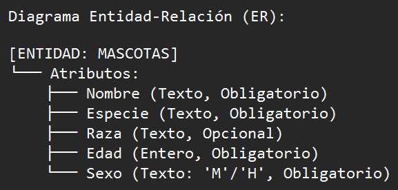
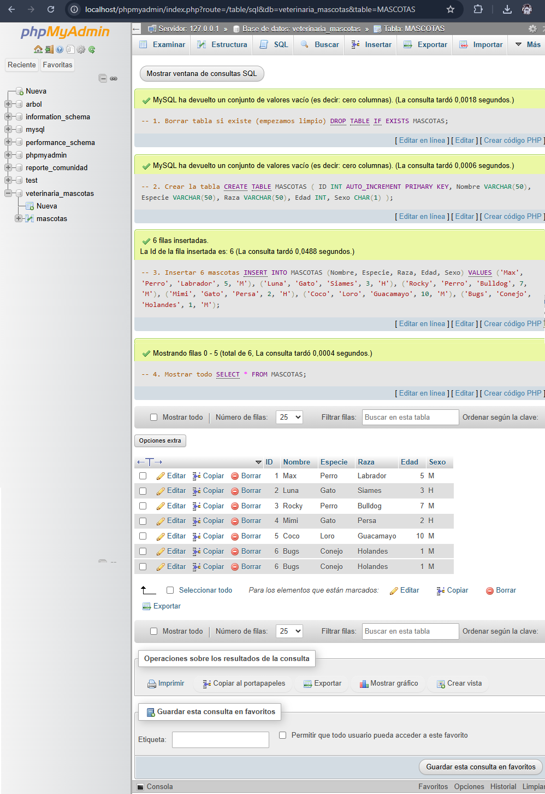
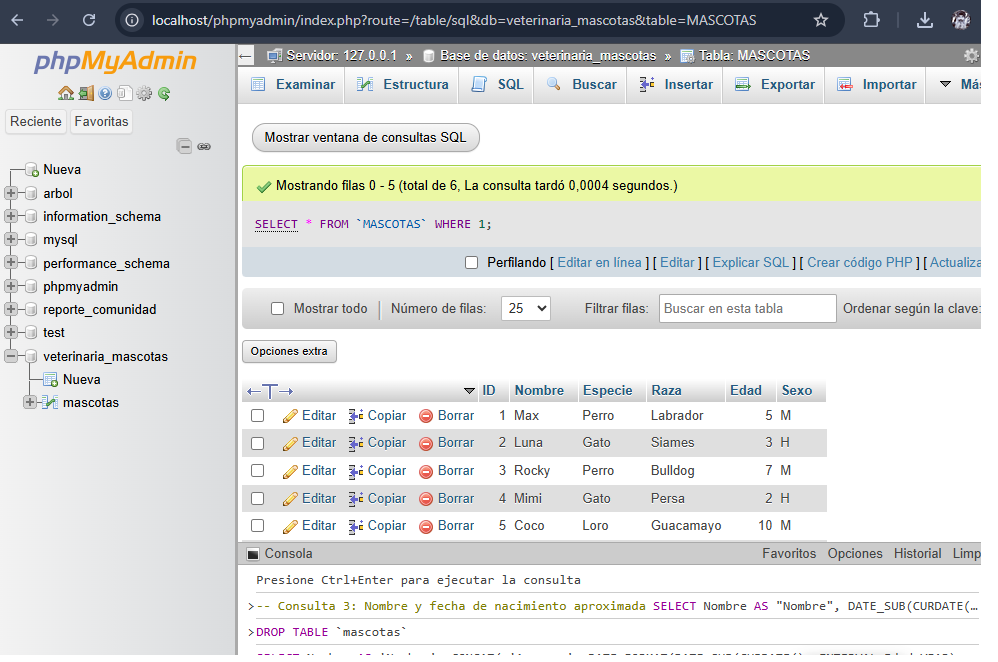
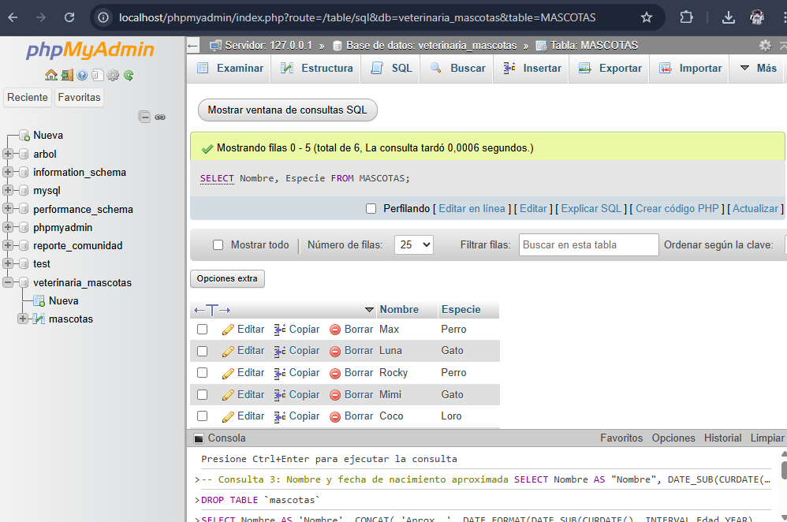
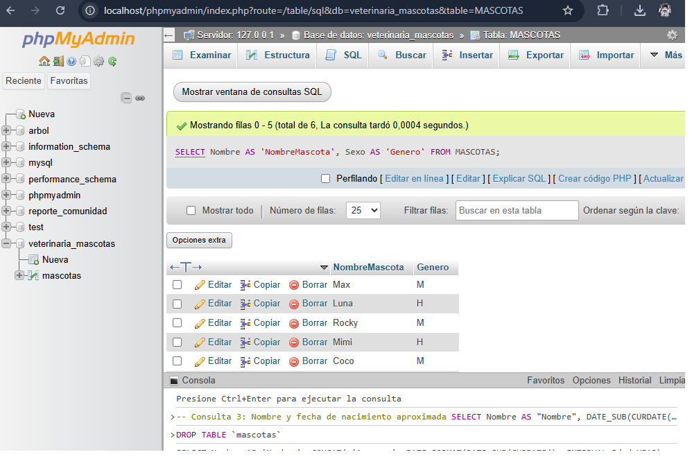
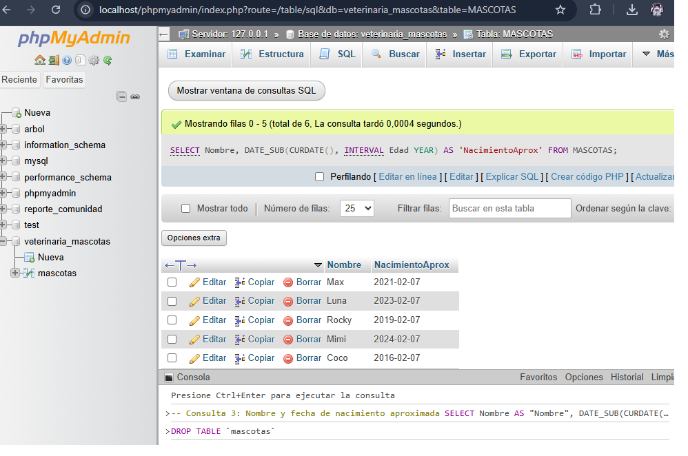

1. Introducción
El presente documento detalla el diseño e implementación de una base de datos para la gestión de información sobre mascotas, desarrollada como parte del trabajo práctico de la asignatura Base de Datos del Programa Nacional de Formación en Informática de la Universidad Nacional Experimental de la Gran Caracas (UNEXCA).
Este proyecto aplica los conceptos teóricos adquiridos en clase sobre modelado de datos, diseño de bases de datos relacionales y lenguaje SQL (Structured Query Language). La implementación se realizó utilizando el sistema gestor de bases de datos MySQL y la herramienta administrativa phpMyAdmin, siguiendo las tres etapas fundamentales del diseño de bases de datos: conceptual, lógico y físico.
Objetivos específicos:
- Diseñar un modelo entidad-relación para el dominio del problema
- Transformar el modelo conceptual en un esquema relacional
- Implementar físicamente la base de datos
- Poblar la base con datos de prueba
- Ejecutar consultas SQL que demuestren el funcionamiento del sistema
2. Diseño Conceptual
El diseño conceptual representa la estructura de los datos independientemente de la implementación física. Para este sistema se identificó una única entidad principal: MASCOTAS.
2.1. Diagrama Entidad-Relación

Figura 1. Diagrama Entidad-Relación de la base de datos Mascotas
2.2. Descripción de la Entidad
| Atributo | Descripción | Tipo |
|---|---|---|
| ID | Identificador único de cada registro (clave primaria) | Entero |
| Nombre | Nombre propio de la mascota | Texto |
| Especie | Clasificación biológica (perro, gato, loro, etc.) | Texto |
| Raza | Variedad específica dentro de la especie | Texto |
| Edad | Tiempo de vida en años | Entero |
| Sexo | Género biológico (Macho/Hembra) | Carácter |
3. Diseño Lógico
3.1. Esquema Relacional
MASCOTAS (
ID: Entero,
Nombre: Texto(50),
Especie: Texto(50),
Raza: Texto(50),
Edad: Entero,
Sexo: Carácter(1)
)3.2. Especificación de Atributos
| Atributo | Tipo de Dato | Longitud | Restricciones | Descripción |
|---|---|---|---|---|
| ID | INT | - | PRIMARY KEY AUTO_INCREMENT | Identificador único |
| Nombre | VARCHAR | 50 | NOT NULL | Nombre de la mascota |
| Especie | VARCHAR | 50 | NOT NULL | Tipo de animal |
| Raza | VARCHAR | 50 | NULLABLE | Raza específica |
| Edad | INT | - | NOT NULL | Años de edad |
| Sexo | CHAR | 1 | NOT NULL | M=Macho, H=Hembra |
3.3. Restricciones de Integridad
- Clave primaria: El atributo ID identifica unívocamente cada registro
- Integridad de entidad: No se permiten valores nulos en los atributos ID, Nombre, Especie, Edad y Sexo
- Integridad de dominio: El atributo Sexo solo acepta los valores 'M' o 'H'
4. Diseño Físico
4.1. Código SQL de Implementación
-- Creación de la base de datos
CREATE DATABASE IF NOT EXISTS Veterinaria_Mascotas
CHARACTER SET utf8mb4
COLLATE utf8mb4_spanish_ci;
-- Selección de la base de datos
USE Veterinaria_Mascotas;
-- Creación de la tabla principal
CREATE TABLE MASCOTAS (
ID INT PRIMARY KEY AUTO_INCREMENT,
Nombre VARCHAR(50) NOT NULL,
Especie VARCHAR(50) NOT NULL,
Raza VARCHAR(50),
Edad INT NOT NULL,
Sexo CHAR(1) NOT NULL
) ENGINE=InnoDB DEFAULT CHARSET=utf8mb4;
-- Inserción de datos de prueba
INSERT INTO MASCOTAS (Nombre, Especie, Raza, Edad, Sexo) VALUES
('Max', 'Perro', 'Labrador Retriever', 5, 'M'),
('Luna', 'Gato', 'Siamés', 3, 'H'),
('Rocky', 'Perro', 'Bulldog Francés', 7, 'M'),
('Mimi', 'Gato', 'Persa', 2, 'H'),
('Coco', 'Loro', 'Guacamayo Azul', 10, 'M'),
('Bugs', 'Conejo', 'Holandés Enano', 1, 'M');4.2. Configuración Técnica
- Gestor de Bases de Datos MySQL 8.0 / MariaDB 10.4
- Juego de Caracteres UTF-8 (utf8mb4)
- Motor de Almacenamiento InnoDB
- Herramienta de Administración phpMyAdmin 5.1
5. Resultados y Pruebas
5.1. Estructura de la Tabla

Figura 2. Estructura física de la tabla MASCOTAS en phpMyAdmin
5.2. Datos Insertados

Figura 3. Registros insertados en la tabla MASCOTAS (6 registros)
5.3. Consulta 1: Nombre y Especie
SELECT Nombre, Especie FROM MASCOTAS;
Figura 4. Resultado de la consulta de nombres y especies
5.4. Consulta 2: Nombre y Sexo con Alias
SELECT
Nombre AS 'Nombre de la Mascota',
CASE
WHEN Sexo = 'M' THEN 'Macho'
WHEN Sexo = 'H' THEN 'Hembra'
END AS 'Género'
FROM MASCOTAS;
Figura 5. Resultado de la consulta con alias y transformación de datos
5.5. Consulta 3: Nombre y Fecha de Nacimiento Aproximada
SELECT
Nombre,
DATE_SUB(CURDATE(), INTERVAL Edad YEAR) AS 'Fecha de Nacimiento Aprox.'
FROM MASCOTAS;
Figura 6. Resultado de la consulta con cálculo de fecha de nacimiento
6. Conclusiones
Logros Alcanzados
- Base de datos diseñada e implementada exitosamente
- Proceso de desarrollo completo (conceptual, lógico, físico)
- 6 registros insertados correctamente
- 3 consultas SQL ejecutadas con éxito
- Uso efectivo de phpMyAdmin como herramienta
Recomendaciones Futuras
- Ampliación del modelo con más entidades
- Implementación de una interfaz web
- Sistema de backup automático
- Control de acceso y seguridad
- Documentación actualizada del diccionario de datos
Reflexión Final
Este trabajo constituye una base sólida para extensiones futuras, como la incorporación de tablas adicionales (dueños, veterinarios, vacunas) y la implementación de una interfaz de aplicación web. La experiencia con phpMyAdmin resultó valiosa para comprender el funcionamiento de los sistemas gestores de bases de datos en entornos reales.